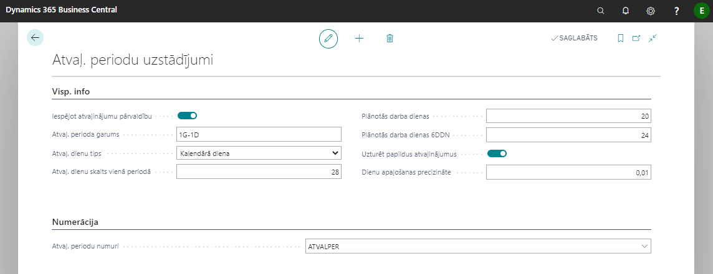
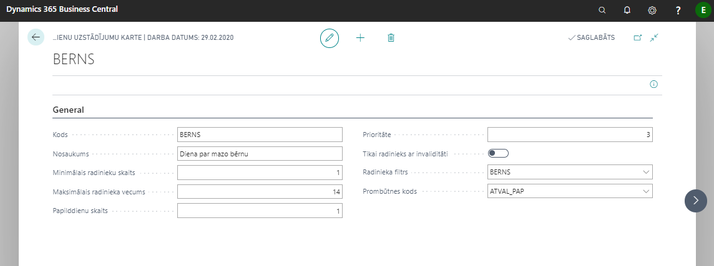
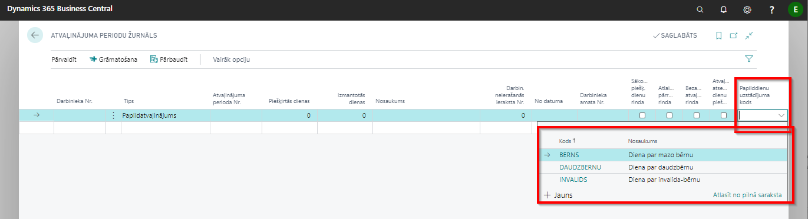
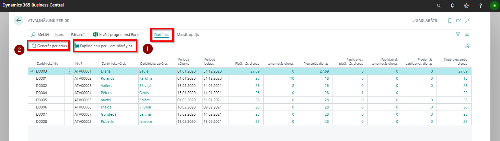
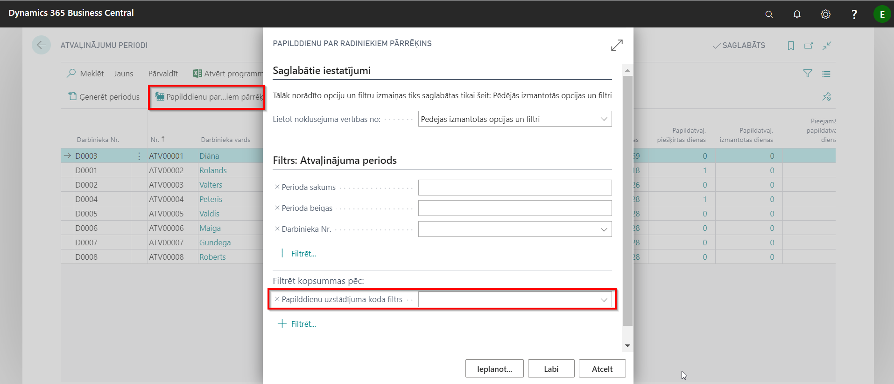
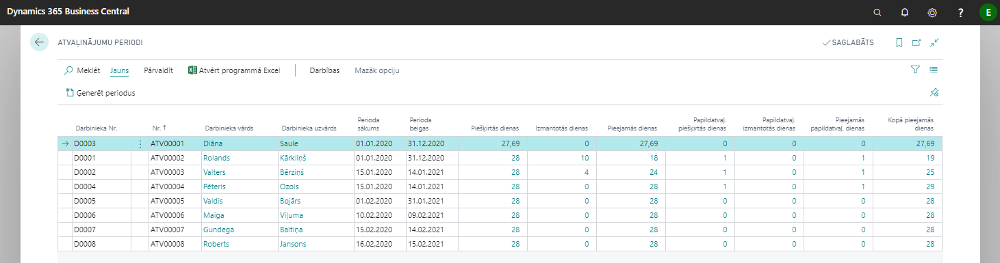
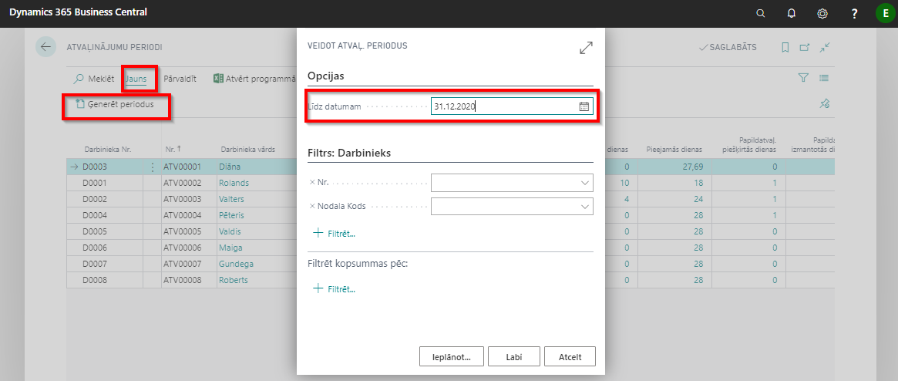
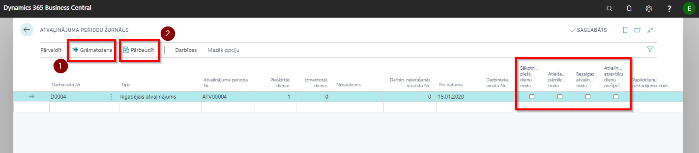

Atvaļinājumu pārvaldība
Atvaļinājuma periodu uzstādījumi
Atvaļinājumu uzstādījumi uzstādījumi ( Lomu centrs - Atvaļinājumu periodi - Uzstādījumi - Atvaļ. periodu uzstādījumi) sastāv no sekojošiem laukiem:

| Lauka nosaukums | Apraksts |
|---|---|
| Iespējot atvaļinājumu pārvaldību | Iespējot, ja izmantojat atvaļinājumu pārvaldību. |
| Atvaļinājuma perioda garums | Norāda atvaļinājuma perioda garumu |
| Atvaļ. dienu tips | Kalendāra diena vai darba diena. |
| Atvaļ. dienu skaits vienā periodā | Norāda piešķiramo atvaļinājuma kalendāra dienu skaitu par vienu periodu. |
| Plānotās darba dienas | Norāda piešķiramo atvaļinājuma darba dienu skaitu par vienu periodu. |
| Plānotās darba dienas 6DDN | Norāda piešķiramo atvaļinājuma darba dienu skaitu par vienu periodu sešu darba dienu nedēļai. |
| Uzturēt papildus atvaļinājumus | Iespējot, ja nepieciešams uzturēt papildus atvaļinājumus. |
| Dienu apaļošanas precizitāte | Norāda precizitāti (zīmes aiz komata), ar kādu atlikušās atvaļinājuma dienas/ stundas tiks izmantotas aprēķinos. |
| Atvaļ. periodu numuri | Norāda atvaļinājumu periodu Nr. sēriju. |
Atvaļinājuma periodu papilddienu uzstādījumi
Atvaļinājumu periodu papilddienu uzstādījumi (Lomu centrs - Atvaļinājumu periodi - Uzstādījumi - Atvaļinājuma perioda papildus dienas iestatīšana) sastāv no sekojošiem laukiem (visiem gadījumiem jāizveido savs uzstādījums):

| Lauka nosaukums | Apraksts |
|---|---|
| Kods | Brīvi izvēlēts koda nosaukums. |
| Nosaukums | Brīvi izvēlēts nosaukums. |
| Minimālais radinieku skaits | Norādiet skaitli. |
| Maksimālais radinieka vecums | Norādiet skaitli. Jāņem vēra, ka vecums noradīts, ieskaitot šo vērtību. |
| Papilddienu skaits | Norādiet, cik dienu pienākas par vienu periodu. |
| Prioritāte | Gadījumā, ja izpildās vairāki nosacījumi, tiks ņemta augstākā prioritāte. |
| Tikai radinieks ar invaliditāti | Iespējo, ja papildatvaļinājuma tips attiecas uz radiniekiem ar invaliditāti. |
| Radinieka filtrs | Tiks apstrādāti dati tikai ar noradīto kodu. |
| Prombūtnes kods | Papildatvaļinājumu dienu uzskaitei tiks apstrādātas prombūtnes ar noradīto kodu. |
Risinājums paredzēts automātiskai papildatvaļinājuma dienu piešķiršanai (par bērniem).
VID pamatojums:
Darbiniekam, kuram ir divi bērni līdz 14 gadiem, par pirmo darba gadu pienākas 1 papildatvaļinājuma diena. Papildatvaļinājuma diena proporcionāli nav jārēķina.
Darbiniekam, kurš nav nostrādājis pilnu gadu, ir tiesības uz papildatvaļinājumu, kā to nosaka Darba likuma 151. pants, un darbinieks papildatvaļinājumu drīkst pieprasīt, jo papildatvaļinājums piešķirams darba gada ietvaros.
Darbiniekam ir tiesības uz papildatvaļinājumu līdz kamēr bērnam nepaliek 15 gadu. Tādējādi, līdz laikam, kamēr bērnam ir 14 gadi un 11 mēneši, darbiniekam ir tiesības uz papildatvaļinājumu.
Saskaņā ar VDI vēstuli, jāņem vērā, ka dienas tiek piešķirtas, ja darbiniekam ir vismaz viena darba diena šajā atvaļinājuma periodā (nav proporcionāli aprēķināts). Gadījumā, ja darbiniekam ir reģistrēta ilgstošā prombūtne, par kuru nepienākas atvaļinājums, un konkrētajā atvaļinājuma periodā ir reģistrēta tikai tāda prombūtne, atvaļinājums netiks piešķirts.
Gadījumā, ja uzstādījumi nav aizpildīti, automātiska dienu piešķiršana nenotiks.
Tiek pielāgota lapa Darbinieka Radinieki. Ievadot jaunu ierakstu katalogā Radinieki, tiek pārbaudīts vai sakrīt radinieka kods ar papildatvaļinājuma uzstādījumos radinieka kodu. Gadījumā, ja kods sakrīt, tiek piedāvāts papildatvaļinājuma dienu pārrēķins.

Radinieka lapā ir izveidots lauks Persona ar invaliditāti, kurš ietekmē piešķirto papildatvaļinājumu dienu skaitu.
Laukā Vecums, sistēma automātiski aprēķina vecumu uz šodienu ( tas ir servera datums, nevis darba datums) vadoties no laukā Dzimšanas datums ievadītās vērtības.
Sistēma, izejot no radinieka datiem, piešķir papildatvaļinājuma dienas. Tika pieņemts, ka ja nostrādāta kaut 1 diena atvaļinājuma perioda robežās, tad papilddiena par bērniem darbiniekam pienākas. Gadījumā, ja vienā atvaļinājuma periodā mainās nosacījumi, kuri ietekmē pienākošo dienu skaitu (piemēram, bērns sasniedzis kādu noteiktu vecumu), tad sistēma aprēķina dienas uz perioda sākumu un perioda beigām un piešķir lielāko dienu skaitu.
Pastāv iespēja piešķirt dienas manuāli, aizpildot Atvaļinājuma periodu žurnālu (Lomu centrs - Atvaļinājumu periodi - Atvaļinājuma periodu žurnāls). Tādam nolūkam žurnālā ir izveidots jauns lauks Papilddienu uzstādījuma kods. Šis lauks jāaizpilda tikai gadījumā, ja tiek koriģētas papildatvaļinājuma dienas par bērniem.

Pastāv iespēja, palaist pienākošo dienu skaita pārrēķinu  no atvaļinājuma periodu saraksta Atvaļinājuma periodi (Lomu centrs - Atvaļinājumu periodi - Atvaļinājumu periodi):
no atvaļinājuma periodu saraksta Atvaļinājuma periodi (Lomu centrs - Atvaļinājumu periodi - Atvaļinājumu periodi):

Izmantojot standarta funkciju Ģenerēt periodus  , sistēma arī piešķirs papildatvaļinājuma dienas par bērniem.
, sistēma arī piešķirs papildatvaļinājuma dienas par bērniem.
Ievadot prombūtni, sistēma veic atlikuma pārrēķinu. Ja tabulā Atvaļ. periodu papilddienu uzstādījumi nav ierakstu ar lauka Prombūtnes kods vērtību, kura sakrīt ar lauku Prombūtnes kods darbinieka prombūtnes kartiņā, tad pārrēķins nenotiek.
Lai nodrošinātu dienu par bērniem nedalīšanu proporcionāli, tām prombūtnēm, kurām laukā Ietekme uz atvaļinājumu vienādu ar Samazina atvaļinājuma periodu , pirms pieejamo papildatvaļinājumu dienu aprēķina, tiek uzlikts filtrs Papilddienu uzstādījuma koda filtrs tabulai Atvaļinājuma periods uz tukšumu. Kā arī netiks pārbaudīts, ka papildatvaļinājums par bērniem paliek negatīvs, respektīvi, ja tas tika izmantots, tad nebūs kļūdas paziņojums par dienu nepietiekamību.

Dienu attiecināšana pa periodiem: papildināta funkcionalitāte, lai varētu piešķirt papildatvaļinājuma dienas par bērniem vai citas papildatvaļinājuma dienas. Tiek pārbaudīts vai tagad tiek apstrādāts papildatvaļinājums, tad tiek pārbaudīts vai tabulā Atvaļ. periodu papilddienu uzstādījumi pastāv ieraksts ar tādu Prombūtnes kods, kā šim ierakstam. Ja ir, tad tiks uzlikts filtrs uz lauku Papilddienu uzstādījuma koda filtrs tabulai Atvaļinājuma periodi, kur nav tukšs, pretējā gadījumā, tas tiks uzlikts tieši tukšs, lai aprēķinātu korekti pieejamas papildatvaļinājuma dienas – atbilstoši bērnu papilddienas vai citas. Ja tas būs par bērniem, tad tiks aizpildīts lauks Papilddienu uzstādījuma kods ar pirmo atrasto tabulā Atvaļ. periodu papilddienu uzstādījumi. Pārējā loģika paliek, ka bija standarta – mēģinās piešķirt dienas pa visiem iespējamiem periodiem.
Gadījumā, ja papildatvaļinājums tika piešķirts un izmantots par nākamajiem periodiem, tad atlaižot darbinieku, sistēma noslēgs tekošo atvaļinājuma periodu, pārējie tiks dzēsti.
Atvaļinājuma periodi
Lomu centrs - Atvaļinājumu periodi - Atvaļinājumu periodi.

Atvaļinājuma periodos iespējams iegūt informāciju par darbiniekam piešķirtajām, izmantotajām, pieejamajām ikgadējā/papildatvaļinājuma dienām, kā arī, uz kādiem darba periodiem tās attiecas. Lai izveidotu jaunus atvaļinājuma periodus, jāizvēlas Ģenerēt periodus

Atvaļinājuma periodu žurnāls
Lomu centrs - Atvaļinājumu periodi - Atvaļinājuma periodu žurnāls
Atvaļinājuma periodu žurnālā iespējams ievadīt/koriģēt datus par piešķirto/izmantoto atvaļinājuma/papildatvaļinājuma dienu skaitu.
Kad nepieciešamā informācija atvaļinājuma periodu žurnālā ir ievadīta, to iespējams Pārbaudīt un pēc tam Grāmatot . Pēc grāmatošanas iegrāmatotā informācija atspoguļojas Atvaļinājumu periodi.

| Lauka nosaukums | Apraksts |
|---|---|
| Sākotnējā piešķ. dienu rinda | Izmanto gadījumos, kad ir nepieciešamība koriģēt perioda piešķirto dienu skaitu. Tiks ņemts vērā pie perioda samazināšanas un pie atlikušo dienu aprēķina perioda vidū. |
| Atlaišanas pārrēķina rinda | Izmanto gadījumos, kad ir nepieciešamība koriģēt dienu skaitu, kas aprēķināts pie darbinieka atbrīvošanas pēdējā atvaļinājuma periodā. |
| Bezalgas atvaļinājuma rinda | Izmanto gadījumos, kad ir nepieciešamība veikt piešķirto atvaļinājuma dienu skaita samazinājuma korekciju saistībā ar bezalgas atvaļinājumu. Darba likums paredz, ka laikā, kas dod tiesības uz ikgadējo apmaksāto atvaļinājumu, neieskaita atvaļinājuma laiku bez darba samaksas saglabāšanas, kas ir ilgāks par četrām nedēļām viena gada laikā. |
| Atvaļinājuma atsevišķu dienu piešķiršana | Izmanto gadījumos, kad ir nepieciešams piešķirt papildu dienu no kāda konkrēta datuma. Diena netiek sadalīta proporcionāli atvaļinājuma periodam, stājas spēkā uzreiz. |
Jāpievērš uzmanība, ka gadījumos, kad atvaļinājumu dienas uzskaite ir kalendārās dienās, tad piešķirot papildatvaļinājuma dienu, sistēma uzkrājumos ņems vērā ka piešķirta diena ir darba diena, nevis kalendārā diena.